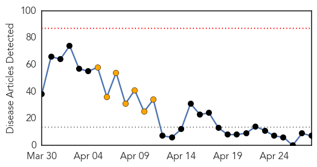
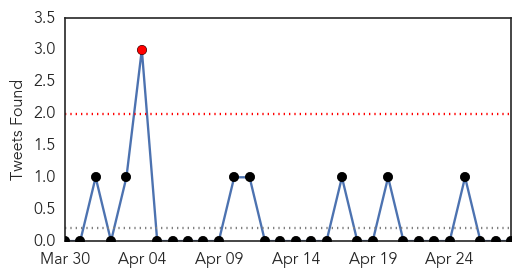
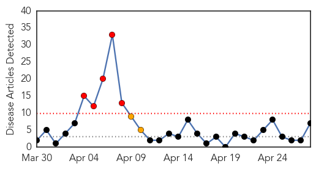
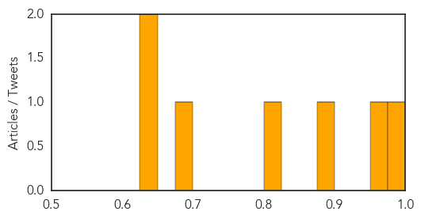

Ebola
30-Day Web Trend
0 alerts, 7 warnings

30-Day Twitter Trend
1 alerts, 0 warnings

Article Locations

Article Confidences

Top Articles:
- 1.000
- Death Toll In Guinea Ebola Outbreak Mounts To 86
- 1.000
- Geography in the News: Ebola Terror
- 0.999
- Survivors of Ebola face second 'disease': stigma - Alliance Review
- 0.999
- Ebola Victims Face Stigma in West Africa
- 0.999
- Ebola virus disease, West Africa - update (25 April 2014) - Guinea
- 0.990
- Ebola survivors face another disease: Stigma Of Being A Victim
- 0.961
- ExxonMobil Partners with Plan International to Combat Ebola Outbreak in Liberia
Top Tweets:
-
No tweets found for Apr 28, 2014
Dengue Fever
30-Day Web Trend
5 alerts, 2 warnings

30-Day Twitter Trend
0 alerts, 0 warnings

Article Locations

Article Confidences
Top Articles:
- 0.986
- Trial of Dengue Fever Vaccine Cuts Infection in Half
- 0.960
- First vaccine for dengue shows promise in trials
- 0.897
- Insurance firms clueless amid rising MERS cases
- 0.814
- Sanofi dengue vaccine proves effective
- 0.689
- Asia Pacific Region: Weekly Regional Humanitarian Snapshot 22 - 28 April 2014 - Bangladesh
- 0.647
- With genome deciphered, experts aim to swat dreaded tsetse fly
- 0.633
- Sanofi successfully completes dengue vaccine study
Top Tweets:
-
No tweets found for Apr 28, 2014